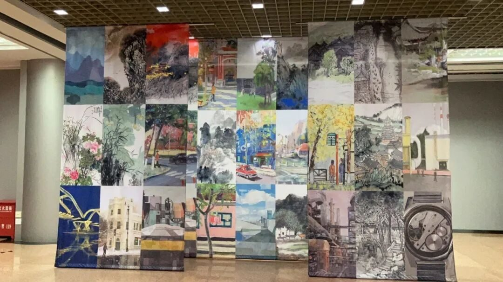
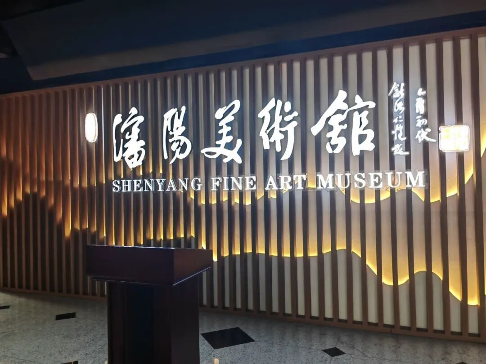
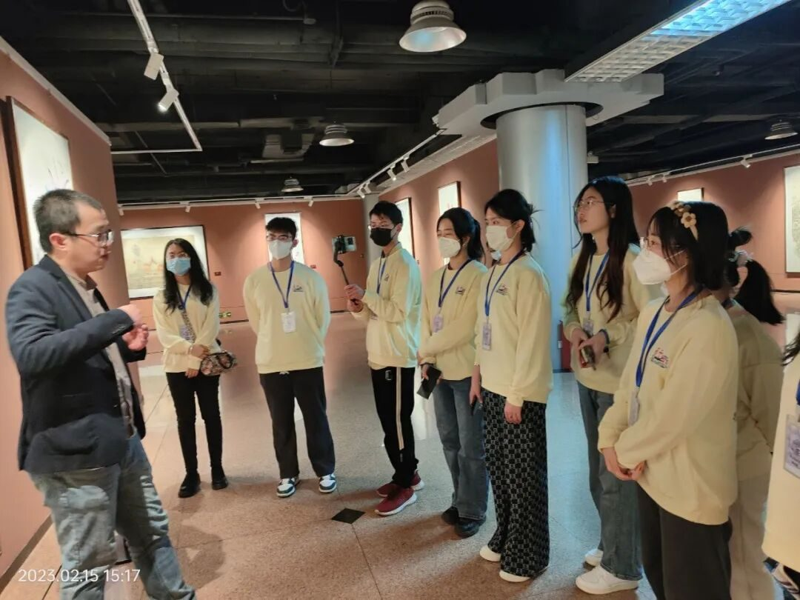
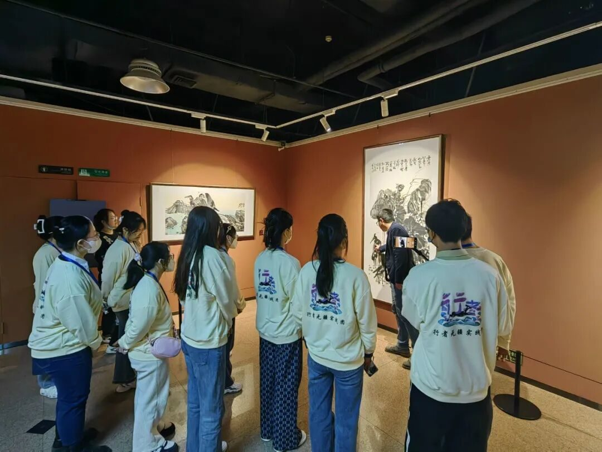

执画笔，绘盛世


执画笔
绘盛世

齐聚沈阳城，相约美术馆，
欣赏古今绝美画作，感悟中西文化融合。



阳光穿越云层，相聚沈阳城。行者们沈阳的行程由沈阳美术馆开始。作为传承文化和社会发展服务的枢纽，沈阳美术馆书写着沈阳人的创新实践，记录着新时代的振兴强音。


很荣幸邀请到了大连理工大学校友——沈阳市中国画学会副会长刘旭学长为我们讲解馆内画作的背景及含义。刘旭学长说：“在表现形式上，中国绘画讲究“以线造型”，而西方绘画讲究运用光线、色彩来塑造形象。”异中有同律，同中有异曲。“在绘画中体现东方文化与西方文化的差异，同时系统地吸收西方的油画精华，将外来艺术融入中国绘画中，形成独特魅力的中国画艺术风采。”
在展品丰富的沈阳美术馆，展品既有对抗战、沈阳解放等重大历史题材的艺术聚焦，也有对党史发展等红色主题的重彩描绘；既有“百花齐放——中国花鸟画名家邀请展”，也有“画家笔下的美丽中国”画展；既有对工业发展的倾情塑造，也有对城市建设的热烈颂扬。

体验画家笔下的大沈阳，感悟中西方绘画的交汇融合。同时，冰雪文化也应融汇在我们的日常生活中，广泛推广冰雪文化，创新冰雪文化内容，让大家感受冰雪文化的魅力！
来源 | 行者无疆实践团
图片 | 行者无疆实践团
图片 | 部分来源于网络
文字 | 徐晓彤
排版 | 崔雨琪
审核 | 周奕彤 崔雨琪